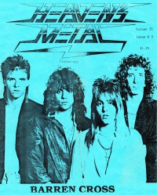

Barren Cross
 |
| January 1986 Heaven's Metal |
 |
| 1987 Heaven's Metal |
 |
| January 1994 Heaven's Metal |
 |
| June 2008 Heaven's Metal |
Media coverage:
- Jan 1986 in Heaven's Metal "Metal For The King", by Doug Van Pelt
- Jul 1986 in Heaven's Metal "Concert Review: Barren Cross", by Doug Van Pelt
- 1986 in Heaven's Metal "Metal For The King", by Doug Van Pelt
- 1987 in Heaven's Metal "Concert Review: Barren Cross", by Doug Van Pelt
- 1987 in Heaven's Metal "Barren Cross", by Doug Van Pelt
- Oct 1987 in CCM "In Concert: Memorial Auditorium, Porterville, CA", by Darin Bunch
- 1987 in Heaven's Metal "Barren Cross", by Doug Van Pelt
- 1987 in Heaven's Metal "Metal Mardi Gras", by Doug Van Pelt
- Mar 1988 in Heaven's Metal "The Mighty Sound of Barren Cross", by Doug Van Pelt
- Mar 1988 in Heaven's Metal "Concert Review: Metal Heaven or Nothing", by Doug Van Pelt
- Apr 1988 in Heaven's Metal "On The Road With Barren Cross"
- Jul 1988 in Notebored "Barren Cross"
- Sum 1989 in Harvest Rock Syndicate "Metal Shop: Full Volume Love On a Stage of Intensity", by Ernest P. Strange
- Aug 1989 in CCM "Still Rockin' For The King", by Bruce A. Brown
- Oct 1989 in Heaven's Metal "Tackling Issues With Barren Cross", by Marc Carpenter
- Dec 1989 in Heaven's Metal "Poster: Ray Parris (Barren Cross)"
- Dec 1990 in Heaven's Metal "The State of Intensity", by Doug Van Pelt, Beth Fadeland Whitaker
- Jan 1994 in Heaven's Metal "Still Rockin' For The King", by Andrew Crump
- Jan 1995 in Heaven's Metal "Released and Ratting Cages", by Andrew Crump
- May 1995 in Heaven's Metal "Concert Review: Barren Cross", by Paul Doty
- Jun 2008 in Heaven's Metal "Barren Cross Is Back... Preaching Repentance", by Todd Walker
- Apr 2012 in HM "The Stage of Re:intensity", by Daniel Frick, Andreas Vosseler
- Jan 2014 in HM "Heaven's Metal: A Conversation with Michael Drive (Lee)", by Charlie Steffens
Albums & reviews:
1985: Believe
- 1985 in Cornerstone
- Nov 1985 in Heaven's Metal, by Mikhail Sweet Gorbachev
- 1985 in Cornerstone, by Jon Trott
- Mar 1986 in Heaven's Metal, by Doug Van Pelt
- May 1986 in MusicLine
- Jul 1986 in Campus Life, by Jim Long
- 1988 in Heaven's Metal, by Doug Van Pelt
- May 1988 in CCM, by Steve Rabey, Devlin Donaldson
- Jul 1988 in Campus Life, by Jim Long
- 31 Jul 1988 in Circus, by Paul Gallotta
- Aug 1988 in Heaven's Metal, by Doug Van Pelt
- Spr 1989 in Harvest Rock Syndicate, by Ernest P. Strange
- May 1989 in CCM, by Doug Van Pelt
- Dec 1990 in Heaven's Metal, by Doug Van Pelt
- Dec 1990 in Heaven's Metal, by Steven White
- Jan 1991 in Harvest Rock Syndicate, by Kevin Allison
- Jan 1995 in Heaven's Metal, by Doug Van Pelt
- 1995 in Syndicate, by Jamie Lee Rake
- Jan 2014 in HM, by Doug Van Pelt
Award Summary (Nominations / Wins)
Dove Awards- 1990 Dove Awards
- Metal Album: State of Control
Books about Barren Cross
- "0272 Barren Cross" in Headbangers: The Worldwide Mega-Book of Heavy Metal (Mark Hale, 1993)
- "Barren Cross" in The Encyclopedia of Contemporary Christian Music (Mark Allan Powell, 2002)
© 2011 CMnexus. Last updated April 2021. Contact: editor -AT- cmnexus -DØT- org About